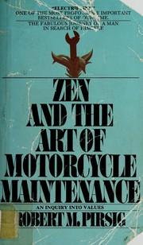

Zen and the Art of Motorcycle Maintenance: An Inquiry into Values
Book·Robert M. Pirsig, 1974·禅与摩托车维修艺术

Uses a novel and philosophy to examine reason, values and the practice of everyday life; a neighboring read for psychology.
- Author
- Robert M. Pirsig
- Year
- 1974
- Difficulty
- Intermediate
- Kind
- Adjacent field
- Schools
- Existential Psychotherapy
Editions
- Chinese edition 《禅与摩托车维修艺术》 [美] 罗伯特·M.波西格 · tr. 张国辰 / 王培沛 · 重庆出版社 · 2018 Douban 8.3 (5927 ratings) Douban page ↗
- English edition Zen and the Art of Motorcycle Maintenance: An Inquiry into Values Robert M. Pirsig · Harper Perennial Modern Classics · 2005 Open Library ↗